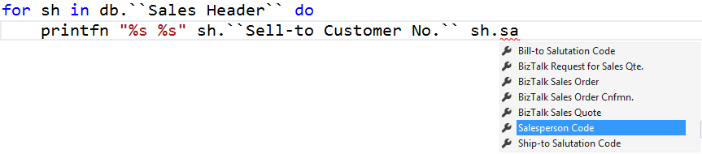

DynamicsNAVProvider
A type provider which allows to access Microsoft Dynamics NAV data from a SQL Server in a strongly typed way. It's supporting LINQ queries, schema exploration and much more besides.
PM> Install-Package DynamicsNAVProvider -prerelease
Example
This example demonstrates the use of the type provider:
1: 2: 3: 4: 5: 6: 7: 8: 9: 10: 11: 12: 13: 14: 15: 16: 17: |
// reference the type provider dll #r "FSharp.Data.DynamicsNAVProvider.dll" open System open System.Linq open FSharp.Data // configure the Dynamics NAV type provider with a connection string to the db // and set the company type NAV = DynamicsNAV<"Data Source=SFORKMANN;Initial Catalog=UWW;Integrated Security=True", Company="CRONUS International Ltd."> let db = NAV.GetDataContext() // now you have typed access to the whole Dynamics NAV database // look into the sales headers for sh in db.``Sales Header`` do printfn "%s %s" sh.``Sell-to Customer No.`` sh.``Salesperson Code`` |
You will even get Intellisense for all of this:

1: 2: 3: 4: 5: |
// Retrieve all companies for company in db.Company do printfn "%s" company.Name Company 1 CRONUS International Ltd. |
Queries
It's possible to perform LINQ queries against the Dynamics NAV database:
1: 2: 3: 4: |
query{ for cus in db.Customer do join sh in db.``Sales Header`` on (cus.``No.`` = sh.``Sell-to Customer No.``) select (cus.Name,sh.``No.``,sh.``Currency Code``) } |> Seq.toArray |
Samples & documentation
The library comes with comprehensible documentation.
- API Reference contains automatically generated documentation for all types, modules and functions in the library. This includes additional brief samples on using most of the functions.
Contributing and copyright
The project is hosted on GitHub where you can report issues, fork the project and submit pull requests. If you're adding new public API, please also consider adding samples that can be turned into a documentation. You might also want to read library design notes to understand how it works.
The library is available under Public Domain license, which allows modification and redistribution for both commercial and non-commercial purposes. For more information see the License file in the GitHub repository.
Full name: Index.NAV
Full name: FSharp.Data.DynamicsNAV
<summary>Typed representation of a Dynamics NAV database</summary>
<param name='ConnectionString'>The connection string for the sql server</param>
<param name='Company'>The company</param>
<param name='IndividualsAmount'>The amount of sample entities to project into the type system for each sql entity type. Default 1000.</param>
<param name='ResolutionPath'>The location to look for dynamically loaded assemblies containing database vendor specifc connections and custom types.</param>
Full name: Index.db
<summary>Returns an instance of the Sql provider using the static parameters</summary>
DynamicsNAV<...>.GetDataContext(connectionString: string) : DynamicsNAV<...>.SqlService
<summary>Retuns an instance of the Sql provider</summary>
<param name='connectionString'>The database connection string</param>
Full name: Microsoft.FSharp.Core.ExtraTopLevelOperators.printfn
<summary>The base table Company belonging to schema dbo</summary>
Full name: Microsoft.FSharp.Core.ExtraTopLevelOperators.query
<summary>The base table CRONUS International Ltd_$Customer belonging to schema dbo</summary>
Calls Linq.QueryBuilder.Join
Calls Linq.QueryBuilder.Select
from Microsoft.FSharp.Collections
Full name: Microsoft.FSharp.Collections.Seq.toArray